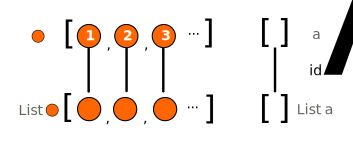
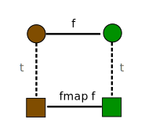

Functor
A functor is a pair of mappings between categories that maps morphisms and objects between the two categories. More precisely it is a mapping between $ T: A \rightarrow B $ such that for every object in A there exists
\[ T: A \rightarrow T(A) \in B \]
And for each morphism $ f : X \rightarrow Y $
\[ T(f): T(X) \rightarrow T(Y) \in B \]
In functional programming we differentiate between the functorial action or functorial image on an object ( T a ) from the functorial action on a morphism usually denoted fmap f.
In Hask the Functor typeclass is defined with:
class Functor t where
fmap :: (a -> b) -> t a -> t b .
.
Functor laws
The essential nature of Functors is that we preserve composition structure under mapping. Namely:
\[ T ( g . f ) = (T g) . (T f) \]
fmap (g . f) = fmap g . fmap f
And pictorially:
 .
.
The previous law also implicitly depends on the preservation of identities, indeed the identity morphism for an object must be preserved by functorial action.
fmap id = id
And pictorially:
 .
.
Hask
The classic example is Haskell functor over Pair values and the list functor.
data Pair a = Pair a a deriving Show
instance Functor Pair where
fmap f (Pair x y) = Pair (f x) (f y)
instance Functor [] where
fmap f [] = []
fmap f (x:xs) = f x : fmap f xs
A rough illustration of the List functor pictorially.
.
Contravariant Functors
A slight variant on the traditional functor is a contravariant functor which reverses the domain and codomain of functorial image of the morphism.
\[ t: A \rightarrow T(A) \in B \]
And for each morphism $ f $
\[ T(f): T(Y) \rightarrow T(X) \in B \]
.
Traditional functors as discussed above can also be referred to covariant functors.